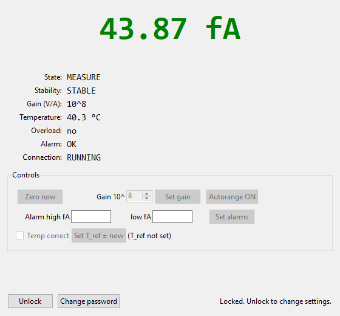

A desktop operator panel for a low-current measurement setup. Python and tkinter.
This is a simulated stand-in for professional work I can't share publicly. It reuses the same operator panel and the same file-based frontend/backend split, wired to a simulator instead of the real instrument.

This is a desktop app, so it runs locally rather than in the browser:
python picoammeter_readout.pyView the code on GitHub